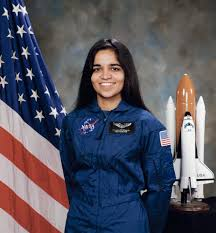
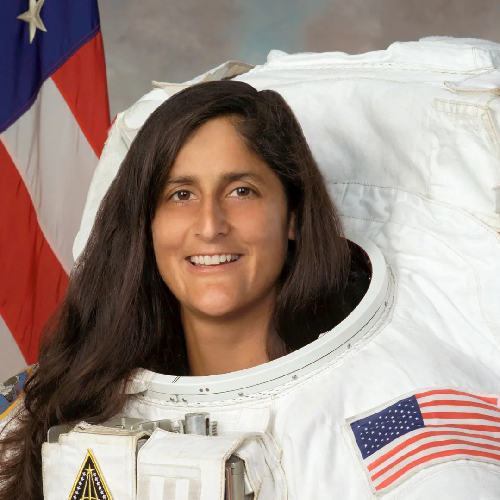
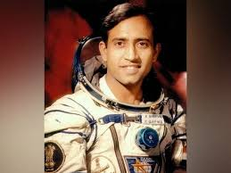
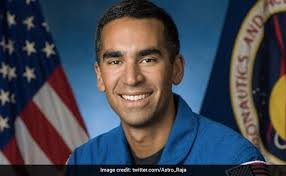

kalpana
Kalpana Chawla became the first Indian-born woman to go to space in 1997. Six years later, on February 1, 2003, Chawla died when the space shuttle Columbia broke up on re-entry into Earth's atmosphere, killing all seven astronauts on board. and she is the first indian women austronet in india.
see more

sunitha
Sunita Williams is an American astronaut. Her two spaceflights to the International Space Station combined lasted more than 321 days, ranking her second (after American astronaut Peggy Whitson) for most time spent in space by a woman for most time spent in space by a woman.
see more

Rakesh
Wing Commander Rakesh Sharma, AC (born 13 January 1949) is an Indian former Air Force pilot who flew aboard Soyuz T-11 on 3 April 1984 as part of the Soviet Interkosmos programme. He is the only Indian citizen to travel in space, although there have been other astronauts of Indian.
see more

Raja chari
Raja Jon Vurputoor Chari is an American test pilot and NASA astronaut. He is a graduate of the United States Air Force Academy, Massachusetts Institute of Technology, and U.S. Naval Test Pilot School, and has over 2,000 flying hours. earning a Master of Science in aeronautical.
see more
